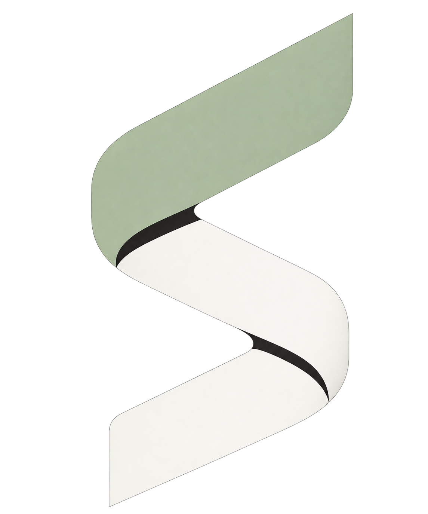

THE CONTINUITY OF THOUGHT
Senrelay续境
换个 Agent，
思路接着走。
New agent. Same thread.ORIGINAL IMAGE / 2026.10

ORIGINAL RIBBON — 当前使用LIGHT UI / 同一原图，深底承托
ORIGINAL PNG / 无重绘、无改色
01 / THE NAME
不是另一个会话。
是同一条思路。
Senrelay / 续境
Senrelay 是围绕 sense 与 relay 的品牌造词，建议读作 SEN-relay。它将理解与接力联系起来，并不声称是有既定词源的英语单词。
「续境」指延续项目的语境：工具可以换，进度、决定与记忆继续留在同一条线上。
Sen理解 · sense+relay接力 · 延续→续境持续的项目上下文
02 / THE ORIGINAL MARK
保持原样，
让思路延续。
使用之前概念图中的真实折带标志。
通过 imagegen 提取透明 PNG，
网页仅缩放展示，没有代码重绘。
01
同一个 Logo
保留原图的连续折带、转折与明暗层次，不用另一个几何 S 替换。
02
同一份图片
官网、工作台和图标直接复制同一 PNG；通过文件校验确认副本一致，不改变像素。
03
只调整展示
页面通过 CSS 控制大小、比例和承托背景。浅色界面使用深色底座，不重新绘制单色版。
03 / THE SYSTEM
同一个标志。
适应不同界面。
深炭灰、暖白、鼠尾草绿。
保留图片原有颜色与质感，
名称以页面文字呈现。
Senrelay续境
ORIGINAL PNG + LIVE TEXT / 原图与可编辑文字Charcoal
#191A18 / 界面背景
Warm white
#EFEFEA / 界面文字
Sage
#B7C4A1 / 界面强调
色值用于界面；PNG 内的原始像素颜色没有调整。名称使用系统字体回退，尚无宣称已转曲的矢量字标。
04 / SAME IMAGE, DIFFERENT SIZES
缩放显示，
保持原图。
以下全部使用同一 PNG，
以 16 / 24 / 32 / 64 / 96px 容器等比显示。
没有重画所谓小尺寸版本。
16 PX
24 PX
32 PX
64 PX
96 PX
Senrelay项目上下文×
小图标受原图比例与透明留白影响。
页面保持完整比例，不裁切、不变形。
05 / NAME & DOMAIN
品牌已采用。
域名待确认。
已采用名称为 Senrelay / 续境。以下仅是候选域名文本，不是已拥有的地址，也不是可购买保证。
- senrelay.com
- 注册局 RDAP 未查到注册对象
- senrelay.app
- 注册局 RDAP 未查到注册对象
- senrelay.ai
- 查询受限 · 状态未知
核查日期：2026-10-24。注册商可售状态与价格尚未核实；名称搜索不等于商标清查。现有 GitHub 地址保持不变。
06 / THE ORIGINAL ASSETS
使用原图。
当前仅提供真实 PNG 资产；不将旧 SVG 当成现用 Logo。